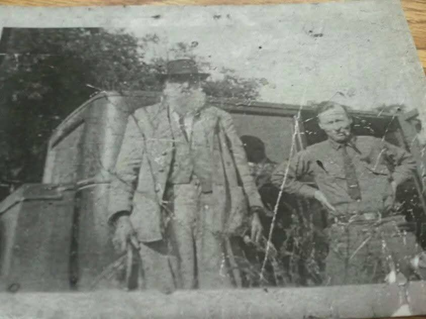

Project News
What we’re researching, what we’ve found, and where you can help · Updated November 24, 2026
On this day in family history —
Drawn from the tree and refreshed every day — births and deaths on this date in family history.
Latest finds
New records, as they land.
- New Doyle Lee Sanders’s obituary found — the real one, from June 1992. It confirms his death on June 7, 1992 in Dadeville, Alabama, and his tree page has been corrected.
- New Gladys Pulliam’s story filled in — her dates, both marriages, and her five children, from her obituary and headstone.
- New A 1927 newspaper clipping solved — “Three Deaths at Beauvoir” names a “J. T. Sanders” who turns out to be our Joseph Pearson Sanders of the Wayne Rifles, 13th Mississippi.
Corrections log
When the records prove us wrong, we say so here and fix the tree.
- Fixed Doyle Lee Sanders’s death date — government indexes said June 15, 1992; his obituary, headstone, and memorial all agree on June 7, 1992. The tree now shows June 7, with the other date kept on record.
- Fixed Samuel L. Sanders Sr.’s birth year — his obituary printed 1947; his records show 1948. The tree carries 1948.
- Fixed The younger man in the by-car photograph — we had wondered if he was a son or grandson of Joseph Pearson Sanders. Deborah Lonsway tells us he was Joseph’s driver, assigned to the veterans home at Beauvoir, who drove him up to visit his son George’s family. His name is still wanted — see Most Wanted below.
Now researching
The lines we’re actively working. Anything marked Unproven is a lead we’re testing — not a settled fact.
- Ruth Patterson Lonsway (1930–2012) of Moselle, Mississippi — tracing where she was laid to rest.
- Earl Moody Sanders’s Army years — his Marine service (1942–46) is documented; we’re verifying his Army service (1950–54) through the National Archives.
- A daughter lost in Germany — family papers say Earl and Harriette’s daughter Sarah Suzanne died in Germany in 1953, as a baby. We’ve asked the National Archives for the official report. Unproven
- Was there a second Mrs. William Dewitt Sanders? — a lady named Ella Manning may have married William after Lilly’s death in 1942. We’re looking for a Mobile marriage record before anything goes in the tree. Unproven
Branch spotlight — Jehu’s line

- Jehu Berry Sanders (1866–1917) of Richton, Mississippi, was Joseph Pearson Sanders’s son. His line runs down through William Dewitt Sanders of Choctaw County, Alabama, to Earl Moody Sanders — Marine, soldier, and grandfather of this project’s founder. It’s the most fully documented branch in the tree, and it started with one man’s death certificate in a soldiers’ home.
A different branch of Joseph Pearson’s family is featured here in rotation — Jehu, Thorough Good, George, and Thomas.
Mystery photo of the week
This week’s faces are waiting on names — if you recognize anyone, tell us in the Facebook group.
Drawn from the 64 photos shared in the Sanders Family Roots group. Several have already been named by family members. You can also share a photo or document through the family archive form.
New to the tree
Recent additions — thank you to the family members who shared them.
- The McFarland family of Jacksonville — Walter “Wally” McFarland, his wife Angie, and her stepdaughters Kaelyn and Kymble. Shared by Angie McFarland, Nov 2026
- Lloyd Sanders & Tina Kilburn’s family — their children Brian and Katelyn, and Katelyn’s family with Michael Martorana. Shared by Katelyn Martorana, Nov 2026
- Grover Jacobsen & Marcella Krosch — added as the parents of Rosann McFarland, proven by Marcella’s obituary.
Contributor honor roll
Family members who have shared sheets, photos, documents, or service information. This project is built out of what you send.
- Angie McFarland — family group sheet for the McFarland family
- Katelyn Martorana — family group sheets for the Lloyd Sanders and Martorana families
- Kim Sanders Attaway — her father Donald Leroy Sanders’s Marine Corps service
- Kathy Sanders Smith — her father Thomas Barton Sanders’s Army service
Records we’re waiting on
- Waiting Seven Mississippi death certificates requested from the state archives — for Jehu Sanders, his wife Sarah, and five more of the family. Expected around Christmas.
- Waiting Military service files — request packets are out to several of our veterans’ families for signature, including Lloyd Sanders’s. As files come back, their stories join the They Served page.
Help wanted
Pieces of the puzzle family members may be holding. If any of these ring a bell, we’d love to hear from you.
- Help Where is Charles Andrew Sanders buried? Earl and Harriette’s son died in 1957, not yet a year old, in Escambia County, Florida. No burial place has been found.
- Help Do you know Deborah Lonsway of Moselle? — or Ruth Lonsway’s family? We’re trying to complete Ruth’s story.
- Help Old photos with no names? Send them in — the family has been remarkable at putting names to faces.
- Help What was Dessie Sanders’s maiden name? She was K. C. Sanders’s wife. Two names have been suggested over the years and neither is proven — the tree leaves it blank until a record or a family memory settles it.
- Help Who is the man in a January 1967 photo with Christine (Walley) Bates Sims? Her first husband, Taylor Bates, died in 1954 — so the man beside her in 1967 may be her second husband, a Sims whose first name we have never found.
- Help Did Grover Cleveland Sanders (1922–2012) have a family? His VA marker calls him “Sr.,” and a Grover Jr. appears in Poplarville records — but no wife or children are documented anywhere we have looked.
- Help Descendants of Thorough Good Sanders — of Joseph Pearson’s sons, his line is the least documented. If that is your branch, your family sheet would fill the biggest gap in the tree.
- Help Letters or photos from Earl Moody Sanders’s Army years (1950–54) — his Marine years are well documented; the Army years rest on family papers. A photo in uniform or a letter home from that period would help.
- Help Ruth Patterson Lonsway’s husband — his full name, and what her middle initial “D” stood for. Her daughters’ family may know both.
Most wanted documents
- The name of Joseph Pearson Sanders’s driver. In this 1920s photograph, Joseph (left) stands with the younger man who drove him up from the veterans home at Beauvoir to visit his son George’s family. Deborah Lonsway tells us the young man was assigned to Beauvoir as his driver and made the trip more than once — but nobody has given us his name yet. If your family knows it, we’d love to put his name to the picture.

Joseph Pearson Sanders (left) with his driver from Beauvoir, 1920s. - A marriage record for William Sanders & Louisa Simmons — Joseph Pearson’s parents, named on his death certificate. No record tying them together has ever been found.
- Earl Moody Sanders’s Army discharge papers — his Marine discharge is documented; the Army years (1950–54) rest on family papers until the official file arrives.
They Served
- Lee D. Norris — S1, U.S. Navy, World War II. His VA marker confirms his service, 1910–2001.
- Aaron A. Sanders — U.S. Air Force Captain and physicist, served during Operation Dominic, 1962. Recently added to the family tree.
- More veterans’ stories are being prepared as their records arrive — 32 of our family’s servicemen are honored on the They Served page.
Tell your story
- The memories of our oldest generation are records no archive holds. We’re collecting family interviews on the Sanders Family Roots YouTube channel — sit down with a phone, answer a few simple questions, and your grandchildren will thank you. Watch or join in on the Sanders Family Roots YouTube channel, and ask in the Facebook group — we’ll walk you through it.
Family by the numbers
- 296 different surnames appear in the tree.
- The family’s roots run from Perry County, Mississippi to Escambia County, Florida — with branches in Alabama, Nebraska, and beyond.
- 95 family memorials are linked on Find a Grave, and counting.
Our Christmas goal: 1,100 relatives documented.
1,054 of 1,100 — every family group sheet you send moves the bar.
How a fact gets into this tree
- Two records must agree before a date or a name is treated as proven.
- Unproven leads are labeled unproven — here and on every page.
- Living relatives’ details are never shown — no birth dates, no places, for anyone living.
- Contributors are credited by name for everything they share.
- When the records prove us wrong, the correction goes in the log above — not under the rug.
Want to add your family?
Fill out a Family Group Sheet, share a photo or document, or report a life event — or visit the Share & Contact page at sandersfamilyroots.github.io.